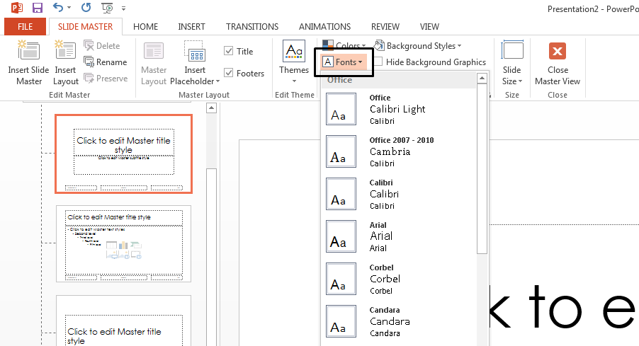

Rather than changing fonts in your slides one by one, you can change the default fonts for your entire presentation. The font pairing (header font, body font) is an important design decision in PowerPoint.
Click View > Slide Master.
On the Slide Master tab, click the Fonts drop-down menu. Select the font you want to use for all the slides in the presentation. You don't have to choose from the pre-defined font pairs on the menu; choose Customize Fonts at the bottom of the menu to select your own fonts.
Note: Any changes you make in Slide Master view affect all the slides that use the master.
Click Close Master View. The text throughout your presentation is automatically updated to the new font.
You can save the above default font updates by creating a PowerPoint template. This template saves your font updates and can be used in future presentations.
Click File > Save As.
Click Computer > Browse.
Navigate to C:\Users\<your username>\Documents\Custom Office Templates.
Type the name of your template in the File Name box. Click the Save as type drop-down menu, and click PowerPoint Template.
Click Save.
Note: You can access your template when you create a new presentation. Click File > New, and click Custom > Custom Office Templates to find your template.